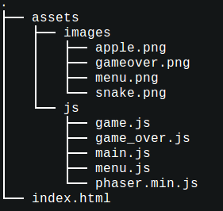

Everybody loves classic games. How many of you remember the retro snake game from old Nokia phones? We sure do. This is why for this lesson we decided to recreate it using HTML5. There is a great open source game development framework called Phaser that we will use. You will learn about sprites, game states and how to use the preload, create and update methods
Download a zip archive with the file structure of the game here It contains all the image assets needed for the game but no code. We will be writing this next.
Now open index.html, add a title for your page and create links to all the JS files. Later, to play the game, just open this file in your browser.
<!DOCTYPE html>
<html>
<head>
<meta charset="utf-8" />
<title>Snake Game using Phaser</title>
<script src="assets/js/phaser.min.js"></script>
<script src="assets/js/menu.js"></script>
<script src="assets/js/game.js"></script>
<script src="assets/js/game_over.js"></script>
<script src="assets/js/main.js"></script>
</head>
<body>
</body>
</html>Your directory should look like this:
Phaser games are organized around states. Think of states in Phaser as the different parts of a game. Here are the states of our game: